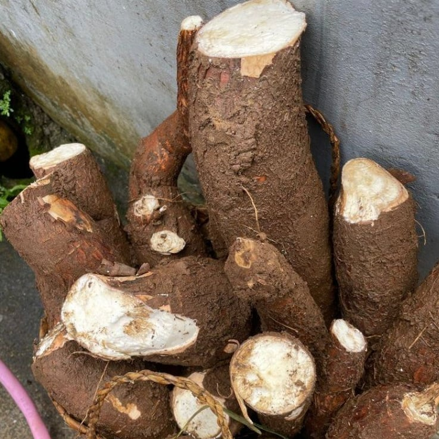

Inirerekomendang Pananim
Alamin kung anong pananim ang angkop na itanim ngayong panahon.
Kasalukuyang Panahon: Panahon ng Tag-uyot

Singkamas
Yambean
Inirerekomendang Pagtatanim:
Oktubre–Nobyembre
Crop Type:
Root Crop

Kamoteng Kahoy
Cassava
Inirerekomendang Pagtatanim:
Disyembre–Mayo
Crop Type:
Root Crop

Palay
Rice
Inirerekomendang Pagtatanim:
Disyembre–Mayo
Crop Type:
Cereal / Grain